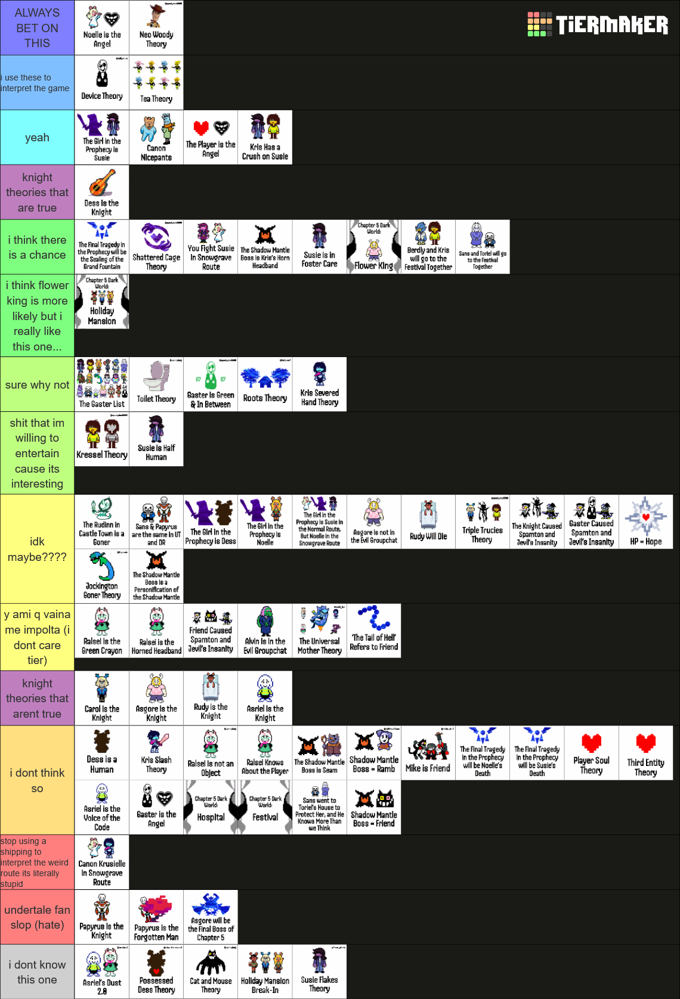

deltarune theories tierlist (post chapters 3&4)
* created on june 8th 2026, before the chapter 5 trailer. link here.
notes
elaborating on some of these. from bottom to top tier.
> "i dont know this one": what it says on the tin. ive seen the asriel's dust meme but i havent actually watched the video so i dont know what it implies. but knowing jaru its probably some bullshit.
> "undertale fan slop": theories that i think come from trying to insert your undertale blorbo into the narrative when they shouldnt be that important. i just dont think papyrus matters that much, just let it go bro.
as for asgore being the final boss, tbh i havent really thought about the evidence for it. maybe its a good theory but... i really dont want it to happen lol, and if i dont like it its not true, this is my logic.
> no comment.
> "i dont think so": i think these things are not true.
i have to kinda explain the placement of the ralsei player one tho. honestly i think its likely true, im putting lower out of haterism because i dislike the way its been used for creepypasta-matpat theorizing about ralsei and kris. but also lowkey (CONTROVERSIAL OPINION INCOMING) i dont think there is any scene in the game that definitively confirms or implies this????? someone argue with me about this, im extremely stubborn but im prob wrong and need to have my mind changed.
for the final prophecy theories: i dont think it involves someone dying
for the player soul theory: i think the player is controlling the soul but i believe it belongs to kris ("a heart on a chain").
kris slash is like the last cope from the kris knight believers. its not even a theory its just fanfiction and i dont think its particularly good at that either, just let it go bro.
> "knight theories that arent true": wont waste my time thinking of other theories other than dessknight.
> "y ami q vaina me impolta": i dont care about the specifics of what object ralsei is. i dont care about FRIEND or the tail of hell. i cannot take any alvin theory post ch3 seriously, why is he here, just let it go bro.
> "idk maybe?": i have not properly thought of the implications of these theories and dont know what to make of them, but i read them and think they kinda sound true??? but like not really.
rudy dying: i think this could happen but i have no idea how that would impact the plot, i just havent thought about rudy enough to form a solid opinion on this.
the girl prophecies: i dont know how the prophecy works, i dont know how malleable it is. maybe its just the roles and everyone can fulfill them, or maybe it has a specific person assigned to them and cannot be changed, i have no idea. and also if theyre true its like??? okay. i dont know what comes after that.
> "shit that im willing to entertain cause its interesting": im not betting anything on these theories but im intrigued by them.
half human susie: i think its interesting that susie has connections to humanity, or is someone that blurs the line between human and monster. thats all. kressel theory: im using this square to refer to kris/vessel meta in general and not the spookydood video. i had never cared for the vessel and i never knew how it was significant for deltarune, until one day i read baldur/kenomacreature's meta on kris being a goner vessel. i can be convinced of almost anything if its tied to kris because i like them.> "sure why not": i dont even know man, i heard it once thought it was fun and went sure okay. the green gaster one is for the meme. someone said that roots theory was a stretch and... yeah honestly it should prob be lower.
toilet theory is like, gas leak theory water version. tbh what interested me the most about it was the observation that weird route is associated with manholes, since it just adds to weird route modding/glitching meta. i like it.
> "holiday mansion": i just want holiday mansion dark world 💔💔💔
> "i think there is a chance": it could very well happen.
> dessknight
> "yeah": shit that is just true.
> "i use these to interpret the game": yeah device theory is a popular framework to understand the metanarrative, and i think for now its the most useful. im curious if theres an alternate theory that goes against it aside from krissociation truthers, and even then i once saw a krissociation person who integrated those two together somehow.
ok now that i think about it tea theory is prob not that important anymore since it only describes the relationships from ch2 and obviously theyre going to change and grow, so uh yeah its true for that context but like moving on from that.
> ALWAYS BET ON NOELLE ANGEL AND WOODY: woody theory is a joke lol i dont think theres really a chance, and if it happens it doesnt mean anything. as for noelle angel well i just think its cool and awesome for noelle to have a role such as the angel, i want her to be involved in the apocalypse. my little snow angel.
^ go to top